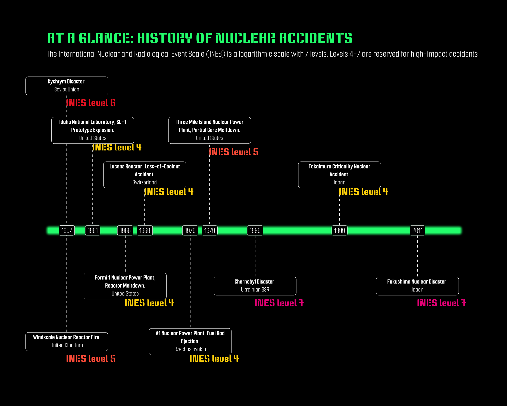
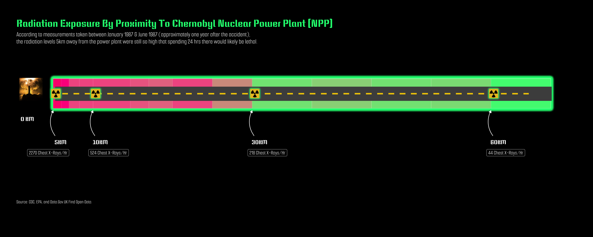
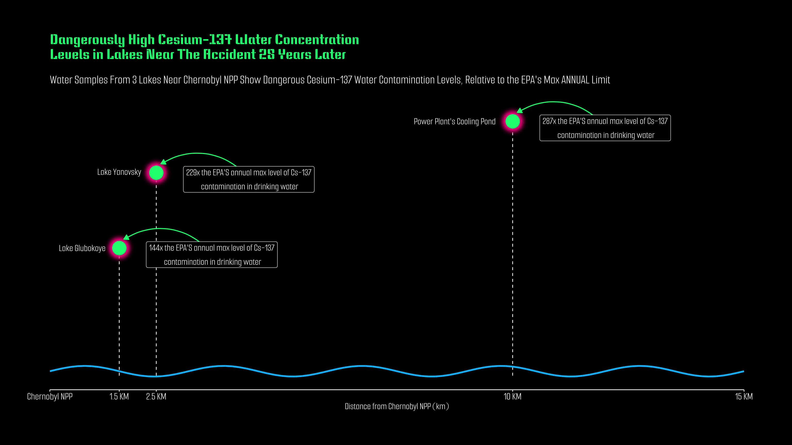

Nuclear Energy Promises a Bright Future
But Behind its Reactor Doors Hides Impending Disaster
Crafting a nuclear disaster infographic with R and Canva
I’ve been learning about nuclear disasters since I was 7, an interest I inherited from my brother. I remember the day he showed me what Chernobyl was and the many hours I spent that day googling pictures and facts about the accident. In 2011 we stayed up late, watching the news coverage of the Fukushima nuclear accident in Japan. It had been predicted that a meltdown was unavoidable and a hydrogen explosion imminent and we watched as the first explosion occurred. I’m fascinated with nuclear energy because as humans we believe that we can tame the fission chain reaction, yet atomic energy has proven to us time and again that as long as humans are the ones running the show, accidents are only a matter of time. I figured I’d combine this interest of mine with my newly learned data viz skills to create an infographic.

The Question
The main question I explore in this data viz project is if the benefits and advantages of nuclear energy are worth the catastrophic consequences of nuclear accidents. Although nuclear accidents are statistically rare, the potential for human error in operating nuclear power plants makes them a question of when, not if.
The Data
The data comes from 2 different sources
Natural Environmental Research Council’s Environmental Information Data Centre
Water Chemistry of Seven Lakes in Belarus and Ukraine 2014 - 2016, accessed through the data.gov.uk Find Open Data page.
Spatial Datasets of Radionuclide Contamination in the Ukrainian Chernobyl Exclusion Zone, accessed through the data.gov.uk Find Open Data Page.
Kaggle
Major Nuclear Plant Accidents (1957 - 2011), accessed via Kaggle.
Additional Data Center for Disease Control and Prevention
International Atomic Energy Agency
World Nuclear Association
The Goal
In the infographic below I propose that despite the promise of clean energy and the relatively low number of nuclear accidents, nuclear energy is not worth the gamble. I dive into the details of the Chernobyl nuclear accident to show that not only is the radioactive contamination far-reaching, but also ever-lasting.
I present data on the water chemistry of three lakes near the Chernobyl Nuclear Power Plant, normalized by the EPA’s annual water contamination limit for Cs-137, to illustrate the extent of radionuclide dispersion. These water samples, collected between 2014 and 2016—more than 20 years after the disaster—underscore the persistent legacy of nuclear contamination. I also analyze data on radiation exposure doses and rates near the NPP one year after the accident, highlighting the immediate and extreme danger of nuclear energy gone wrong.
The Elements
Graphic Forms
I chose to move away from common graphic forms for the first two data viz in my infographic, white the third data viz was made using a common graphic form.
Data Viz 1: A timeline made using ggplot’s geom_segment, geom_point, geom_label, and geom_text to show nuclear accidents INES level 4 or higher over time.
Data Viz 2: A color bar to show radiation exposure by distance to the Chernobyl NPP. The bar was made primarily using geom_tile, geom_segment and geom_labels.
Data Viz 3: A graph showing 3 lakes near the NPP, normalized by the EPA’s annual Cs-137 water contamination levels where the x-axis is distance to the NPP and the y-axis is the Cs-137 concentration normalized.
Text
I used text to point out the most important takeaways from each data viz and to provide context to each graph in the subtitle. Axis text was largely replaced by the labels and annotations I added to each graph to make the viewer consume only the most important data points.
Themes
I intentionally modified most non-data plot elements to be visually pleasing and to appeal to viewers’ associations of neon colors, especially green, to radioactivity. I also incorporated glow to several plot elements - I made the timeline, data points and color bar outer borders glow using the ggfx package.
Colors
I chose three main colors to apply to all my data viz and infographic - deep pink, spring green, and deep sky blue. These colors are bright and neon-like and are meant to maintain the theme of radioactive glow. They also worked well with the effects of the ggfx package’s function “with_outer_glow( )”. Other than these two colors, all other elements and text were kept in black and white. I used black to create a sense of darkness and doom, as well as a futuristic-to-80s feel, in the infographic.
Typography
I selected Google fonts “Keania One” and “Smooch Sans” for the text.
Smooch Sans for main text / descriptions / plot and infographic labels
Simple, clean, less busy
Keania One for main titles or takeaways.
Bold, futuristic font gives the infographic a tech-y, energy-of-the-future feel.
Grabs attention
General Design
I use visual hierarchy to wide the viewer down the infographic, going from big picture to specific example.
The first data viz is a timeline of the history of nuclear disasters.
Then, I zoom in on the Chernobyl Nuclear Disaster and provide context for the event.
The last two data viz display Chernobyl-specific facts that underscore the severity of the accident.
To avoid information overload, I filtered historical nuclear accidents down to those categorized as “accidents” (INES levels 4-7) and left “incidents” (INES levels 1-3) out due to their limited consequences on humans and the environment.
In the Chernobyl-specific data viz I labeled data points to tell a story, instead of displaying all the data. For example, although I had more than 300 radiation exposure data observations, I labeled data points only at meaningful distances away (in Km) from the nuclear power plant.
Contextualizing Data
I contextualized variables in the 3 data viz to make the infographic friendly to a wider audience, and I achieved this by:
Including a legend for INES levels and their definitions,
Contextualizing data by using everyday comparisons:
Instead of radiation dosages in mGy (milligray) within x kilometers from the nuclear power plant, I showed radiation dosages in number of chest-Xrays within x kilometers from the power plant.
Instead of Cesium-137 concentration in pCi/L (picocurie per liter), I showed Cesium-137 concentration in lakes relative to the EPA’s established maximum Cesium-137 consumption (annual).

